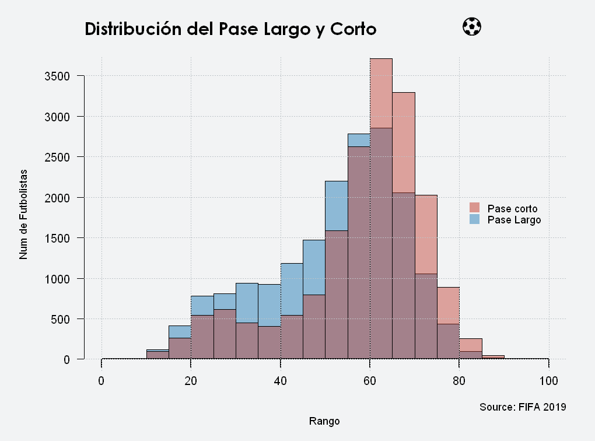
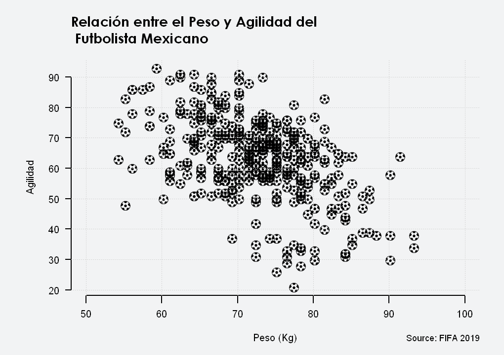
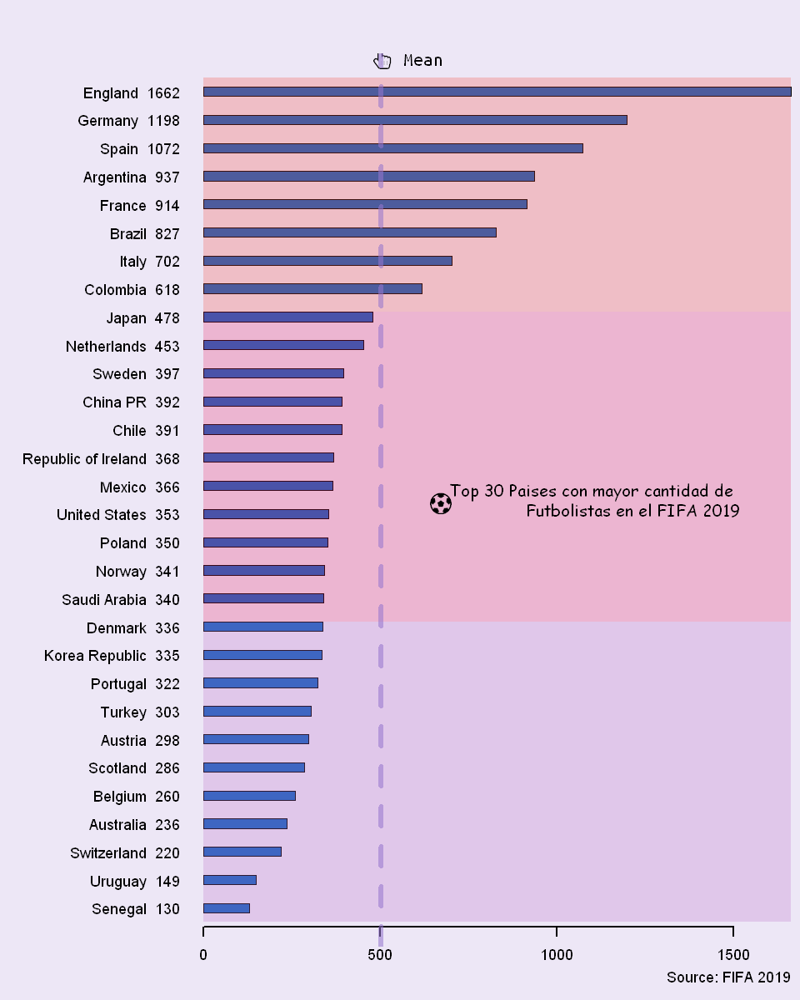

Para los amantes de Futbol
Para los amantes de Futbol¶
## Visualizacion de Datos con R
## Vamos a usar el conjunto de datos del videojuego fifa 2019
fifa <- read.csv("Data/fifa.csv")
## En jupyer-lab los graficos por defecto se muestran en un cuadrado de 7 x 7
## para poder cambiar el largo y ancho del grafico uso la siguinete funcion
dim.plot <- function(x, y) options(repr.plot.width=x, repr.plot.height=y)
### Nerd Fonts https://www.nerdfonts.com/cheat-sheet tiene un conjunto amplio de "Iconos"
### que podemos usar para mejorar nuestros graficos
### En Windows y usando Jupyter es un poco diferente el uso de estos, checar: https://github.com/IRkernel/repr/issues
windowsFonts(serif = "Times New Roman",
sans = "Arial",
mono = "Courier New",
A = "UbuntuMono Nerd Font",
B = "Comic Sans MS")
par(bg = "#F2F3F4", mar = c(5, 6, 4, 2), las = 1, font.lab = 1, cex.lab = 0.9)
dim.plot(8.5, 6.3)
hist(fifa$LongPassing, col = "#2980B980" , main = "",
ylab = "Num de Futbolistas \n", xlab = "Rango",axes = F, xlim = c(0, 100), ylim = c(0, 3600))
hist(fifa$ShortPassing, add = T, col = "#C0392B70" )
title("Distribución del Pase Largo y Corto", cex.main = 1.5, adj = 0, font.main = 15)
axis(1, lwd = 2, tck = -0.025, pos = 0, font = 1)
axis(2, lwd = 1.5, font = 1)
legend("right", legend = c("Pase corto", "Pase Largo"), col = c("#C0392B80","#2980B980"),
pch = 15, bty = "n", cex = 0.9, pt.cex = 1.8, text.font = 1)
mtext("Source: FIFA 2019", side = 1, line = 2, adj = 1, cex = 0.9, outer = F)
mtext("\uf1e3", side = 3, line = 1.5, adj = 0.8, family = "A", cex = 1.6, outer = F)
grid(col = "#BDC3C7")

## Le decimos a R el ancho y largo de la imagen
## el fondo y los margenes
dim.plot(8.5, 6)
par(bg = "#F2F3F4",mar = c(5, 6, 5, 2), las = 1, font.lab = 18)
## Filtramos
fifa2 <- fifa[ fifa$Nationality == "Mexico", ]
## Usamos
plot(fifa2$Weight.*0.45359237, fifa2$Agility, axes = F, pch = "\uf1e3",lwd = 5, family = "A",
xlab = "Peso (Kg)", ylab = "Agilidad", col = "#000000", xlim = c(50, 100))
title("Relación entre el Peso y Agilidad del \n Futbolista Mexicano", cex.main = 1.4, font.main = 15, adj = 0)
axis(1, lwd = 2, tck = -0.030)
axis(2, lwd = 2)
mtext("Source: FIFA 2019", side = 1, line = 3, adj = 1, font = 1, cex = 0.9, outer = F)
grid()

## Los 30 Paises con mas Futbolistas en el FIFA 19
tmp <- sort( table(fifa$Nationality), decreasing = T )[1:30]
dim.plot(8, 10)
par(bg = "#EDE7F6",las = 1, mar = c(3, 11, 3, 0.5), cex = 0.9)
barplot(sort(tmp), names.arg = paste( names(sort(tmp)), sort(tmp), sep = " ") ,horiz = T, space = 2, col = "#1565C0", axes = F)
axis(1, pos = 0.5, tick = -0.025, lwd = 2)
rect(0,1,1662,33,col="#BA68C840", border=NA)
rect(0,33,1662,66,col="#E91E6340", border=NA)
rect(0,66,1662,91,col="#F4433640", border=NA)
mtext("Top 30 Paises con mayor cantidad de\n Futbolistas en el FIFA 2019", adj = 1.2, side = 4, cex = 1, family = "B")
mtext("\uf1e3", side = 1, line = -25, adj = 0.4, family = "A", cex = 1.3, outer = F)
mtext("Source: FIFA 2019", side = 1, line = 1.2, adj = 1, font = 1, cex = 0.9, outer = F)
text(580, 93, "\uf25a Mean",cex = 1.3, family = "A")
abline( v = mean(tmp), lwd = 5, col = "#9575CD90", lty = 2)
